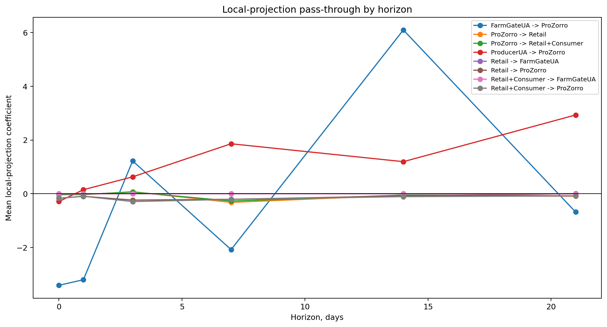
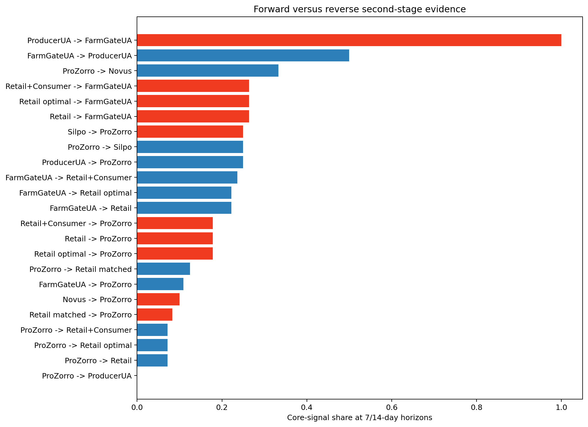
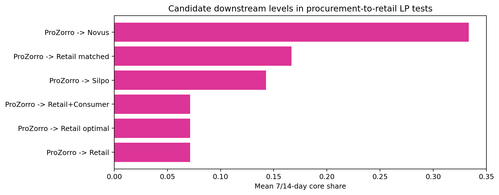
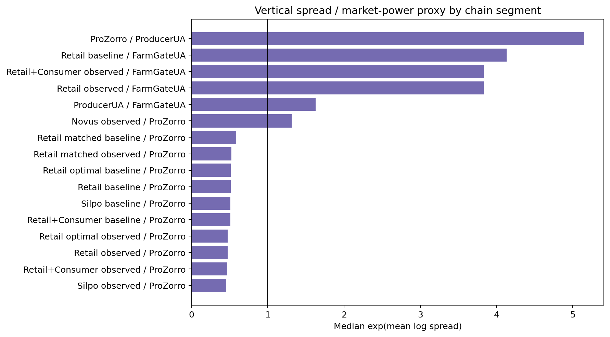
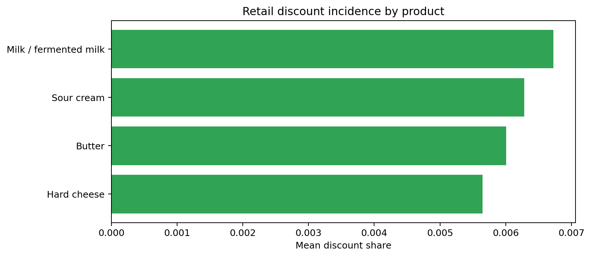

The second-stage estimation chapter is designed to complement the corrected master-thesis draft rather than duplicate it. The draft already uses the richer RW4 ARDL/ECM/NARDL/VECM stack as the main structural evidence. This chapter therefore asks a narrower but important question: if the retail stage is rebuilt more carefully from Novus and Silpo item-level data, do the main economic conclusions survive under a different modelling design?
The answer is broadly yes, but the evidence remains selective and product-dependent. That is precisely why the second-stage methods are useful: they stress-test the thesis argument without pretending to replace the draft's main identification logic.
The first model family uses local projections. It estimates cumulative downstream responses over 0, 1, 3, 7, 14, and 21 days with HAC inference. This complements the main draft because it avoids forcing each link into one equilibrium-correction structure and instead asks where timing evidence is stable across horizons.
The second model family uses vertical spread equations. These are not direct market-power proofs, but they are useful proxies for timing control, asymmetric margin adjustment, and discount-mediated smoothing. The third block keeps a focused discount model in which retail discount incidence is related to lagged discount states and upstream price variation.
In total, the second-stage local-projection block estimates 3570 linear models, of which 728 pass the p<0.10 and overlap screen. The leading 7/14-day thesis-relevant signals are: ProZorro -> Silpo (silpo_baseline, h=7): core share 42.9%, median coefficient -0.025; FarmGateUA -> Retail+Consumer (retail_consumer_observed, h=7): core share 41.7%, median coefficient -3.610; ProducerUA -> ProZorro (procurement_price, h=7): core share 40.0%, median coefficient 1.497; FarmGateUA -> Retail (retail_observed, h=7): core share 38.9%, median coefficient -2.996; Retail -> FarmGateUA (retail_observed, h=14): core share 38.9%, median coefficient 0.000.
Figure 6.1. Local-projection pass-through by horizon.

Source: author's calculations based on the second-stage local-projection summary.
Figure 6.2. Forward versus reverse second-stage evidence.

Source: author's calculations based on the second-stage local-projection summary.
A key improvement relative to the earlier second-stage run is that procurement-to-retail evidence is not evaluated only on one pooled retail line. The pipeline now tests merged retail, matched retail, retailer-specific series, the ConsumerUA-linked series, and the selected optimal series. This directly addresses the concern that stage-4 measurement can change the interpretation of market power.
The candidate comparison shows the following ranking of downstream LP evidence: ProZorro -> Novus: mean 7/14-day core share 33.3%; ProZorro -> Silpo: mean 7/14-day core share 25.0%; ProZorro -> Retail matched: mean 7/14-day core share 12.5%; ProZorro -> Retail: mean 7/14-day core share 7.1%; ProZorro -> Retail optimal: mean 7/14-day core share 7.1%.
Figure 6.3. Candidate downstream levels in procurement-to-retail local-projection tests.

Source: author's calculations based on 7/14-day LP core shares across retail candidates.
This comparison is economically useful because it separates three ideas that are often conflated. First, more coverage is not always better if it comes from a weaker retailer-grounded series. Second, stricter matched-item support is cleaner but shorter. Third, the ConsumerUA-linked endpoint can help with continuity, but it should still be treated as a robustness extension rather than as the literal shelf-price stage. That logic mirrors the corrected master-thesis draft rather than competing with it.
The spread block produces 280 usable equations. Persistent-margin flags appear in 24 rows and asymmetric-margin flags appear in 223 rows. This does not prove structural market power on its own, but it is consistent with downstream timing control, selective margin adjustment, and retailer category management.
Figure 6.4. Vertical spread and market-power proxy by chain segment.

Source: author's calculations based on the vertical spread summary.
The discount block remains more cautious than the main RW4 draft: it yields 4 usable equations and 2 formal discount-strategy signals. That weaker statistical result does not mean discounts are unimportant. Instead, it suggests that in this reduced-form second-stage design the discount mechanism is most visible as part of the retail data-generating process rather than as a stand-alone structural driver.
Figure 6.5. Retail discount incidence by product.

Source: author's calculations based on the second-stage discount model table.
The second-stage results support the same broad market interpretation as the master-thesis draft, but through a different route. Procurement still behaves like an institutional buffer rather than a frictionless conduit. Retail still behaves like a managed adjustment layer. The main economic story still points toward product-specific vertical coordination rather than toward one universal pass-through elasticity.
What changes is the emphasis. The second-stage redesign gives more weight to the downstream data-generating process itself: how item names are reconciled, how brand structure survives aggregation, how discount states are retained inside and outside price, and how the choice of retail endpoint changes the strength of the stage-4 model. That is exactly why this chapter complements the corrected draft: it improves the credibility of the retail stage without forcing the whole thesis to depend on one extra modelling family.
Farm-gate results should remain conservative here as well. The second-stage run still shows that direct FarmGateUA -> ProducerUA evidence can look mechanically strong because both sides are reconstructed and smooth. The more defensible interpretation remains the same as in the corrected draft: FarmGateUA is an upstream benchmark and robustness dimension, not a literal product-level farm-to-shelf elasticity generator.
The strongest contribution of the second-stage chapter is methodological. It shows that once the retail block is rebuilt at item level, filtered to literal dairy products, reconciled across Novus and Silpo, and tested across multiple downstream levels, the core thesis still holds. The retail stage does not behave like a passive residual of upstream costs. It behaves like a strategic adjustment layer in which timing, discount use, brand structure, and category management matter for observed price transmission.
This strengthens the corrected master-thesis draft rather than displacing it. The draft can continue to rely on the richer ECM/NARDL evidence as the main structural story, while the second-stage chapter demonstrates that the downstream interpretation survives deeper retail cleaning and a different empirical design.